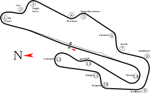

Resultados por Gran Premio
| Ronda | Fecha | Gran Premio | Circuito | Resultados | Resumen de la Carrera | ||||||||||
|---|---|---|---|---|---|---|---|---|---|---|---|---|---|---|---|
| 1 | 3-5 DE JULIO | CIRCUITO: Red Bull Ring CURVAS: 8 LONGITUD: 4,318 km VUELTAS: 71 DISTANCIA DE CARRERA: 306,452 km RÉCORD: GANADOR 2019: POLE 2019: |
|
Gran Premio de Austria | |||||||||||
| 2 | 10-12 DE JULIO | GRAN PREMIO DE ESTIRIA | CIRCUITO: Red Bull Ring CURVAS: 8 LONGITUD: 4,318 km VUELTAS: 71 DISTANCIA DE CARRERA: 306,452 km RÉCORD: GANADOR 2019: No se disputó POLE 2019: No se disputó |
|
Gran Premio de Estiria | ||||||||||
| 3 | 17-19 DE JULIO |  CIRCUITO: Hungaroring CURVAS: 16 LONGITUD: 4,381 km VUELTAS: 70 DISTANCIA DE CARRERA: 302,63 km RÉCORD: GANADOR 2019: POLE 2019: |
|
Gran Premio de Hungría | |||||||||||
| 4 | 31-2 DE AGOSTO |  CIRCUITO: Silverstone CURVAS: 18 LONGITUD: 5,891 km VUELTAS: 52 DISTANCIA DE CARRERA: 306,198 km RÉCORD: GANADOR 2019: POLE 2019: |
|
Gran Premio de Gran Bretaña | |||||||||||
| 5 | 7-9 DE AGOSTO | CIRCUITO: Silverstone CURVAS: 18 LONGITUD: 5,891 km VUELTAS: 52 DISTANCIA DE CARRERA: 306,198 km RÉCORD: GANADOR 2019: No se disputó POLE 2019: No se disputó |
|
Gran Premio 70 Aniversario | |||||||||||
| 6 | 14-16 DE AGOSTO | CIRCUITO: Catalunya CURVAS: 16 LONGITUD: 4,655 km VUELTAS: 66 DISTANCIA DE CARRERA: 307,104 km RÉCORD: GANADOR 2019: POLE 2019: |
|
Gran Premio de España | |||||||||||
| 7 | 28-30 DE AGOSTO | GRAN PREMIO DE BÉLGICA |  CIRCUITO: Spa-Francorchamps CURVAS: 20 LONGITUD: 7,004 km VUELTAS: 44 DISTANCIA DE CARRERA: 308,052 km RÉCORD: GANADOR 2019: POLE 2019: |
|
Gran Premio de Bélgica | ||||||||||
| 8 | 4-6 DE SEPTIEMBRE | CIRCUITO: Monza CURVAS: 11 LONGITUD: 5,793 km VUELTAS: 53 DISTANCIA DE CARRERA: 306,72 km RÉCORD: GANADOR 2019: POLE 2019: |
|
Gran Premio de Italia | |||||||||||
| 9 | 11-13 DE SEPTIEMBRE | GRAN PREMIO DE LA TOSCANA |  CIRCUITO: Mugello CURVAS: 14 LONGITUD: 5,245 km VUELTAS: 59 DISTANCIA DE CARRERA: 309,497 km RÉCORD: GANADOR 2019: No se disputó POLE 2019: No se disputó |
|
Gran Premio de la Toscana | ||||||||||
| 10 | 25-27 DE SEPTIEMBRE |  CIRCUITO: Sochi CURVAS: 19 LONGITUD: 5,848 km VUELTAS: 53 DISTANCIA DE CARRERA: 309,745 km RÉCORD: GANADOR 2019: POLE 2019: |
|
Gran Premio de Rusia | |||||||||||
| 11 | 9-11 DE OCTUBRE | CIRCUITO: Nürburgring CURVAS: 15 LONGITUD: 5,148 km VUELTAS: 60 DISTANCIA DE CARRERA: 308,617 km RÉCORD: GANADOR 2019: No se disputó POLE 2019: No se disputó |
|
Gran Premio de Eifel | |||||||||||
| 12 | 23-25 DE OCTUBRE | CIRCUITO: Portimao CURVAS: 15 LONGITUD: 4,653 km VUELTAS: 66 DISTANCIA DE CARRERA: 306,826 km RÉCORD: GANADOR 2019: No se disputó POLE 2019: No se disputó |
|
Gran Premio de Portugal | |||||||||||
| 13 | 31-1 DE NOVIEMBRE | GRAN PREMIO DE EMILIA ROMAGNA |  CIRCUITO: Imola CURVAS: 19 LONGITUD: 4,909 km VUELTAS: 63 DISTANCIA DE CARRERA: 309,049 km RÉCORD: GANADOR 2019: No se disputó POLE 2019: No se disputó |
|
Gran Premio de Emilia Romagna | ||||||||||
| 14 | 13-15 DE NOVIEMBRE | CIRCUITO: Istambul Park CURVAS: 14 LONGITUD: 5,338 km VUELTAS: 58 DISTANCIA DE CARRERA: 309,396 km RÉCORD: GANADOR 2019: No se disputó POLE 2019: No se disputó |
|
Gran Premio de Turquia | |||||||||||
| 15 | 27-29 DE NOVIEMBRE | GRAN PREMIO DE BARÉIN |  CIRCUITO: Sakhir CURVAS: 15 LONGITUD: 5,412 km VUELTAS: 57 DISTANCIA DE CARRERA: 308,238 km RÉCORD: GANADOR 2019: POLE 2019: |
|
Gran Premio de Barein | ||||||||||
| 16 | 4-6 DE DICIEMBRE | GRAN PREMIO DE SAKHIR | CIRCUITO: Sakhir Exterior CURVAS: 11 LONGITUD: 3,543 km VUELTAS: 87 DISTANCIA DE CARRERA: 307,995 km RÉCORD: GANADOR 2019: No se disputó POLE 2019: No se disputó |
|
Gran Premio de Sakhir | ||||||||||
| 17 | 11-13 DE DICIEMBRE | CIRCUITO: Yas Marina CURVAS: 21 LONGITUD: 5,554 km VUELTAS: 55 DISTANCIA DE CARRERA: 305,355 km RÉCORD: GANADOR 2019: POLE 2019: |
|
Gran Premio de Abu Dabi |